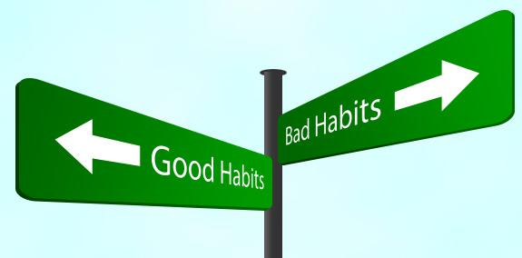

SỨC MẠNH CỦA THÓI QUEN
Như đã từng nói ở chuyện trước đây của “Thằng khờ” hôm nay tôi sẽ chia sẽ với mọi người câu chuyện về “Thói quen”
Thói quen là gì nhỉ? Uh chắc hẳn ai cũng đã từng nghe, biết về thói quen thậm chí mọi người còn đã đang sử dụng nó đấy chứ, nhưng cá là ít ai tìm hiểu về nó đúng không nào ^_- !
Tôi cũng thế từ lúc biết đi, biết chạy tôi chắc rằng mình đã có một số thói quen nào đó, tuy nhiên cho tới dạo gần đây tôi mới tò mò về thói quen là gì! Và nó có tác dụng gì! Và nó hoạt động như thế nào!….
Theo những gì tôi tìm hiểu cụ thể là theo nguồn Wikipedia định nghĩa, “thói quen là một chuỗi phản xạ có điều kiện do rèn luyện mà có”, uh thế nghĩa là sao nhỉ? Phản xạ nghe gần hao hao với phản chiếu trong cái gương soi ấy nhỉ, cơ mà thực tế thì hai điều này cũng không quá khác nhau đâu, thật đấy. Này nhé, một cái gương soi luôn phản chiếu tức là chiếu lại hình ảnh của vật, sự vật trước nó đúng không nào!! Và phản xạ cũng là từ một việc sự việc hoặc cả vật sự vật nào đó tác động đến con người thì con người theo bản tính tự nhiên sẽ quyết định một hành động, một hoạt động để đối trả lại cái đã tác động vào mình. Thế nào, khá giống nhau nhỉ. Vậy còn có điều kiện là sao? Uh, có thể giải thích từ có điều kiện trong định nghĩa này là việc này không tự nhiên mà có mà phải có một cái gì đó (điều kiện) mà ở đây muốn nói đến đó là phải có quá trình rèn luyện quá trình sử dụng cái được nói trước đó. Và ý nói cuối cùng của định nghĩa là “Thói quen là chuỗi những hoạt động, hành động đáp trả lại sự tác động từ một cái gì đó và chuỗi những hoạt động, hành động này cần phải trải qua một quá trình rèn luyện, luyện tập thì mới có được”.
Uh thế đấy. Cơ mà chuyện này thì liên quan gì chúng ta? Hey, như đã nói ở trên ấy, con người từ khi biết đi tới lúc chết đi tôi chắc hẳn rằng mọi người ai cũng phải có thói quen của riêng mình, nhiều hay ít là tùy mỗi người thôi, cơ mà thực tế ít ai quan tâm đến điều đó lắm. Và vì không được quan tâm đúng mức nên đôi khi nó có thể là một khuyết điểm, một điểm yếu của con người đấy. Nói thế nghe có vẻ to tát nhỉ, nhưng trên thực tế nó là thế đấy. Đây là yếu tố số 1 quyết định sự thành công của một con người đấy.
Cũng như mọi điều trên thế giới này vậy, thói quen được chia làm nhiều loại tùy theo cách mọi người lấy chuẩn riêng cho mình, ở đây tôi chia thói quen thành hai loại, tốt và chưa tốt.
Thói quen tốt, là chuỗi những hoạt động, hành động tích cực, tốt,…. đáp trả lại một điều gì đó tác động lên con người và đương nhiên nó đã được rèn luyện. Ví dụ như: Thói quen dậy sớm (Trong đó có hoạt động thức sớm là một hoạt động tích cực và tốt cho cơ thể để đáp trả lại cái sự tác động đó là bình minh đang đến và để dậy được sớm thì phải luyện tập, phải thức sớm nhiều ngày mới có thể thức sớm một cách tự nhiên được), thói quen đọc sách (Trong đó có hoạt động đọc sách là hoạt động tích cực và rất tốt cho bản thân mỗi người để đáp lại cái tác động đến đó là thiếu kiến thức hoặc sự buồn chán, hoặc cảm giác thèm đọc sách,…. và nó cũng là một hoạt động cần rèn luyện mới có được),….. Nói về thói quen tốt thì bao la cơ mà chủ yếu thì thói quen tốt là những thói quen giúp ích cho cơ thể, kiến thức và tinh thần của một người mà không gây thiệt hại đến xã hội,mọi người xung quanh hay cả với chính mình.
Thế một người có thói quen tốt sẽ được gì? Ồ được nhiều đấy, số lượng thói quen tốt có tỷ lệ thuận với cấp số nhân những điều đạt được ấy chứ. Chẳng hạn, bạn có thói quen làm việc chăm chỉ thì bạn sẽ có những điều sau:
- Bạn làm tốt công việc của mình
- Bạn không bị rơi vào tình trạng dồn dập công việc do bạn đã làm tốt và chăm chỉ
- Mọi người quý trọng bạn
- Mọi người yên tâm khi có công việc cần bạn giúp
- Khi đi làm việc bạn sẽ được đề cao và nhận nhiều hơn những gì bạn làm
Thế đấy, chỉ là một thói quen tốt thôi đấy!
Cơ mà có tốt, đương nhiên cũng phải có chưa tốt, mà cái chưa tốt (Không biết có phải vì tiếng “chưa tốt” có nhiều từ hơn tiếng “tốt” hay sao ấy) luôn nhiều hơn cái tốt! Điều đó chắc không cần nói nhiều bạn cũng có thể nhìn thấy, khi ra đường kiếm một người thức dậy sớm khá khó trong khi hỏi 10 người thì có 7 đến 8 người nói rằng mãi đến hơn 6 giờ sáng mới thức (Điều kiện nghề nghiệp hay độ tuổi trình độ là ngang nhau nhé). Và cũng không cần phải nói dài dòng giải thích về cái thói quen chưa tốt này nữa nhỉ khi cơ bản nó là sự đối lập đối với cái thói quen tốt đã nói trên kia rồi (Viết nhiều quá sợ bạn chê chán là bỏ không đọc nữa).
Thế cái chưa tốt có lợi gì cho chúng ta trong cuộc sống? Xin thưa rằng, kiếm cái lợi từ thói quen chưa tốt này thì nhờ may rủi mà một số trường hợp cuộc sống không lường được mới có chứ xét trên hình thức bình thường của thế giới thì hầu như không có cái lợi ích hay điều tốt đẹp gì cho thói quen chưa tốt này cả. Ở trên ta nói làm việc chăm chỉ, thế ta nói đối lại với nó là thói quen lười làm việc để xem ta có những điều tốt đẹp gì?
- Bạn không hoàn thành công việc của mình đúng hẹn
- Bạn hay bị rơi vào hoàn cảnh công việc dồn như núi hay stress nặng
- Mọi người luôn có cái nhìn chưa tốt với bạn
- Mọi người sẽ yên tâm khi không phải giao việc nhóm cho bạn tham gia (Thà làm ít người mệt còn hơn làm xong mà chưa xong)
- Khi đi làm việc có thể bạn sẽ phải xin việc nhiều lần tại nhiều nơi khác nhau và dễ dẫn tới 7 nghiệp
Lợi hại đôi khi phân định rõ thế đấy nhưng, con người thật lạ, luôn thích cái hại hơn cái lợi à!
Cơ mà dẹp chuyện hại lợi hợi lại gì đó qua một bên đi (Dù rằng mọi người cũng đã đọc rồi). Cái chính ta sẽ bàn hôm nay là thói quen có sức mạnh lớn chừng nào? Định nghĩa ta đã biết rồi nhỉ, không nói nữa, vấn đề là làm sao xác định sức mạnh của thói quen được! Umh ta không có thước đo cho thứ này, ta cũng chưa nghe qua đơn vị và cách tính sức mạnh của thói quen luôn,… thế làm sao biết nó mạnh thế nào?
Nói chứ bạn thử nghĩ về một thói quen nào đó của mình xem, uh có thể xấu cũng được (Thói quen là thứ bạn làm nó thường xuyên nhé) rồi bạn cứ thử không làm nó xem có được không? Ví dụ: Tôi đây có một thói quen đó là ngủ trưa và như thường ngày cứ đúng 11 giờ là mắt có chống tăm như mèo Tom thì nó cũng cứ cụp xuống và cũng có vài lần tôi muốn mình tỉnh táo nhưng khó lắm bạn à, kết quả sau nhiều lần cố gắng tôi đã kéo 11 giờ thành 11 giờ 30. :v Tuy nó không có thước để đo, không có đơn vị cụ thể cũng chẳng có một công thức để tính tuy nhiên sức mạnh của nó chắc bạn có thể cảm nhận được.
Thế làm sao nó có được sức mạnh như thế? Uh có lẽ nó như trái bóng tuyết lăn vậy, bạn biết chứ? Lúc đầu nó chỉ như hạt đậu nành bé tí cứ dần dần, nó lăn tròn rồi bồi đắp rồi cứ thế tới một thời điểm nó như chiếc xe thiếc giáp và chắc rằng bạn khó có thể phá nó lắm. Đấy bản chất của sức mạnh ở thói quen là vậy đấy, và nó trung tính nghĩa là nó chẳng cần biết đẹp hay chưa đẹp gì đều có thể ảnh hưởng bởi sức mạnh ấy.
Thế nên quan trọng nhất vẫn không phải là biết được sức mạnh của nó là bao nhiêu hay tìm cách gỡ bỏ sức mạnh ấy, mà quan trọng nhất là sử dụng hiệu quả nhất sức mạnh ấy vào những điều tốt đẹp. Nghĩa là bạn hãy tập tành thói quen tốt đi là vừa, à mới bắt đầu chắc không thể là thói quen được, nó cần thời gian mà, trước tiên bạn phải tập các hoạt động tích cực, các hành động đẹp và đều đặn làm nó mỗi tháng, mỗi tuần, mỗi ngày và mỗi những giờ,…. phải suy nghĩ về những điều tốt đẹp sắp đạt được để có thêm động lực mà làm nó xuyên suốt và rồi biến nó thành thói quen nhé!
Và đừng cố gắng xóa bỏ thói quen xấu (Nếu bạn nghĩ mình làm được thì cứ thử) thay vào đó cách tốt hơn là lấp thói quen xấu bằng một thói quen nào đó tốt đẹp hơn. Cách này vừa hay có thể bỏ dần thói quen xấu mà trong khoảng thời gian đó lại có thêm được một thói quen tốt, thế chẳng phải hay hơn sao, đúng không nào.

Hajzzz nói dài thế chứ chỉ mong các bạn hiểu mình muốn nói rằng chúng ta cần phải tập tành các thói quen tốt đi là vừa. Khi chiếc xe tăng là do mình điều khiển thì sợ gì địch chớ đừng để chiếc thiếc giáp kia chĩa nòng về phía mình.
-- Chúc các bạn có nhiều thói quen tốt đẹp --